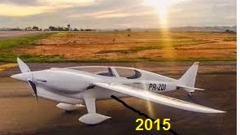
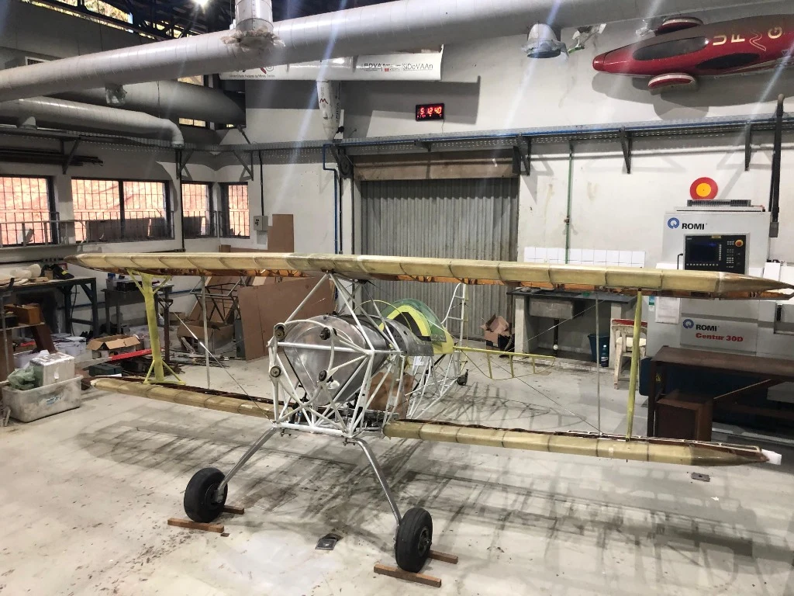
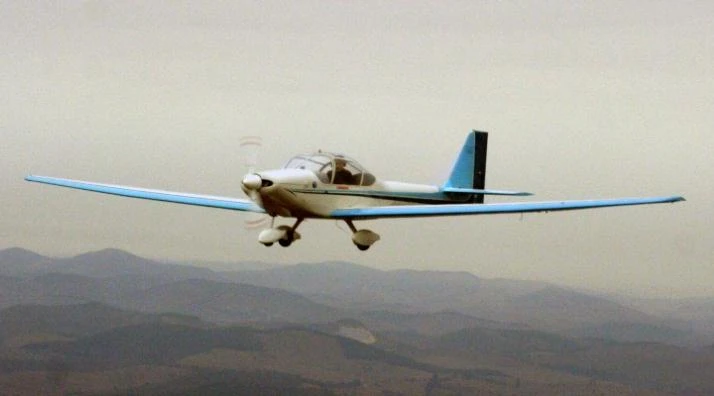
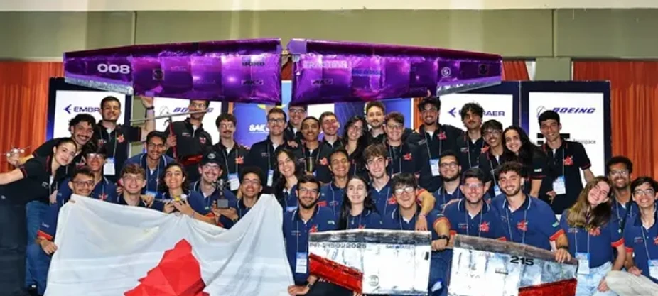
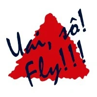

Projects & Education
Bridging classroom theory with physical aircraft prototyping, student design initiatives, competitive AeroDesign, and collaborative industrial research.

UFMG aerospace student conducting cockpit fitting and hardware integration at CEA workshop.
Learning Through Aircraft Projects
CEA’s core educational methodology centers on Design-Build-Test-Fly-Educate. Rather than limiting aerospace coursework to theoretical calculations, students directly participate in sizing, composite lamination, structural testing, and flight data acquisition on real aircraft.
Hands-On Workshop Experience
Students learn to process composite materials, operate precision CNC machinery, and assemble flight control hardware.
Experimental Flight Validation
Connecting aerodynamic mathematical models with real telemetry data measured during flight test campaigns.
Student Design Projects
Academic projects developed within undergraduate and graduate courses, categorized clearly by their technical development stage.

Conceptual Design Studies
Undergraduate graduation projects exploring trade studies, mission sizing, and aerodynamic CAD modeling. Includes concepts such as AG-CEA-580 (Agricultural), URUTAU (Canard), AETHRON (Commuter), and DMR-Jet (VLJ).

Physical Prototypes
Aircraft built in the workshop for ground testing, structural proof loading, and telemetry instrumentation. Includes platforms such as CEA-104 Jegue (Self-Launch Glider) and CEA-UAV-1 WatchDog (Autonomous UAV).

Flown & Validated Aircraft
Full-scale aircraft that completed maiden flights and airborne test campaigns. Includes historic record-breakers and flying laboratories: Gaivota, Minuano, Vesper, Curumim I/II, CEA-308, Mehari, and Anequim.

UFMG students with competition wings at SAE Brasil AeroDesign.

UAI-SO-FLY — UFMG’s AeroDesign Team
UAI-SO-FLY is UFMG’s AeroDesign team, bringing engineering students together to design, build, and fly competition aircraft for SAE Brasil. From aerodynamic profiling and payload optimization to composite wing fabrication and flight testing, the team connects classroom theory with real aerospace challenges.
The team represents another path for students to gain hands-on aircraft engineering experience during their university education — learning structural manufacturing, telemetry data collection, and competitive validation alongside their academic coursework.
Research & Industry Projects
Collaborative engineering initiatives developed alongside industry leaders, funding agencies, and research partners.
Embraer R&D Partnerships
Aerodynamic Efficiency & Flight Testing
Collaborative aerodynamic modeling, boundary-layer transition experiments, and flight test data methodology developed with Embraer engineering teams.
Aeromot & Motor-Gliders
Composite Structures & Certification Data
Historical joint research programs focusing on motor-glider design, composite structural bonding, and flight performance verification.
FAPEMIG, CNPq & Finep Grants
Infrastructure & Autonomous Systems
Research projects funded by government agencies to establish CEA's wind tunnel facility, CNC machine tooling, telemetry instrumentation, and autonomous UAV flight control.
Historical Project Register
Access the full consolidated historical table of 25 projects engineered at CEA since 1963.